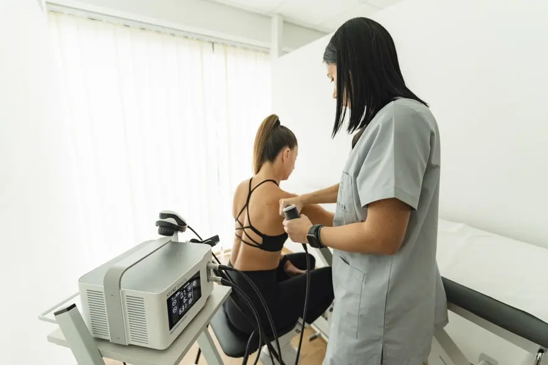
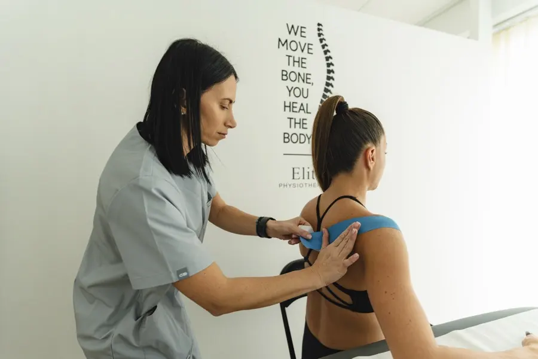
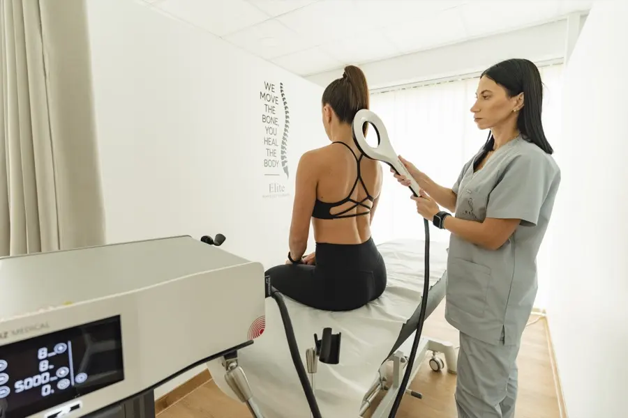
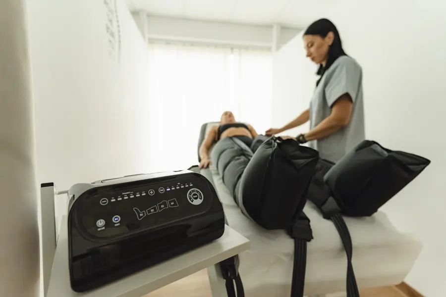
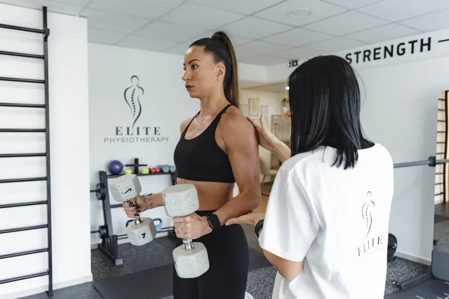

Μέθοδοι
Θεραπείες & Τεχνικές
Εξειδικευμένες τεχνικές χειροθεραπείας και σύγχρονα θεραπευτικά μέσα, επιλεγμένα με βάση την αξιολόγηση και τον κλινικό συλλογισμό.
 01
01
Manual Therapy
Εξειδίκευση της φυσικοθεραπείας για την αποκατάσταση των νευρο-μυο-σκελετικών προβλημάτων, βασισμένη στον κλινικό συλλογισμό και σε εξειδικευμένες τεχνικές προσέγγισης.
Μάθετε περισσότερα → 02
02
Mulligan Therapy
Εξειδικευμένη τεχνική κινητοποίησης που συνδυάζει παθητική κινητοποίηση από τον θεραπευτή με ενεργητική κίνηση από τον θεραπευόμενο.
Μάθετε περισσότερα → 03
03
Dry Needling
Τεχνική ξηράς βελόνας για την αντιμετώπιση του μυοπεριτονιακού πόνου και την απενεργοποίηση των σημείων πυροδότησης (trigger points).
Μάθετε περισσότερα → 04
04
Tecar Therapy
Θεραπεία με ραδιοσυχνότητες που επανενεργοποιεί τους μηχανισμούς αυτο-ίασης του οργανισμού — ανώδυνη, μη επεμβατική τεχνική.
Μάθετε περισσότερα →
05Κρουστικός υπέρηχος (Shockwave)
Σύγχρονη μη επεμβατική θεραπεία που μεταφέρει ακουστικό κύμα υψηλής ενέργειας σε επώδυνα σημεία, ενεργοποιώντας τις διαδικασίες επούλωσης και αναγέννησης των ιστών.
Μάθετε περισσότερα →
06Kinesiotaping Therapy
Αυτοκόλλητες ελαστικές ταινίες που παρέχουν υποστήριξη και σταθερότητα σε μύες και αρθρώσεις, χωρίς να περιορίζουν το εύρος κίνησης.
Μάθετε περισσότερα →
07Διαμαγνητική αντλία
Μη επεμβατική θεραπεία με παλμικά μαγνητικά πεδία υψηλής έντασης, που εφαρμόζεται χωρίς επαφή με το δέρμα για την αντιμετώπιση του πόνου, του οιδήματος και της φλεγμονής.
Μάθετε περισσότερα → 08
08
Ηλεκτροθεραπεία
Εφαρμογή θεραπευτικών ρευμάτων μέσω ηλεκτροδίων στο δέρμα, για την ανακούφιση από τον πόνο, τη χαλάρωση του μυικού σπασμού και την ενεργοποίηση των μυών.
Μάθετε περισσότερα →
09Πρεσοθεραπεία
Διαδοχική συμπίεση των άκρων με ειδικές περιχειρίδες αέρα, που υποστηρίζει τη φλεβική και λεμφική κυκλοφορία και μειώνει το οίδημα και το αίσθημα βάρους.
Μάθετε περισσότερα →
10Ειδικές ασκήσεις σκολίωσης
Physiotherapeutic Scoliosis Specific Exercises — ειδικές ασκήσεις που λαμβάνουν υπόψη τον τύπο και την τρισδιάστατη φύση της σκολίωσης.
Μάθετε περισσότερα →